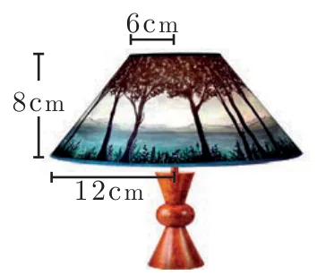

- The radius and height of a cylinder are in the ratio 5:7 and its curved surface area is 5500 sq.cm. Find its radius and height.
- A solid iron cylinder has total surface area of 1848 sq.cm. Its curved surface area is five – sixth of its total surface area. Find the radius and height of the iron cylinder.
- The external radius and the length of a hollow wooden log are 16 cm and 13 cm respectively. If its thickness is 4 cm then find its T.S.A.
- A right angled triangle \(PQR\) where \(\angle Q = 90^\circ\) is rotated about \(QR\) and \(PQ\). If \(QR = 16\) cm and \(PR = 20\) cm, compare the curved surface areas of the right circular cones so formed by the triangle.
- 4 persons live in a conical tent whose slant height is 19 m. If each person require \(22 \text{ m}^2\) of the floor area, then find the height of the tent.
- A girl wishes to prepare birthday caps in the form of right circular cones for her birthday party, using a sheet of paper whose area is \(5720 \text{ cm}^2\), how many caps can be made with radius 5 cm and height 12 cm.
- The ratio of the radii of two right circular cones of same height is 1:3. Find the ratio of their curved surface area when the height of each cone is 3 times the radius of the smaller cone.
- The radius of a sphere increases by 25%. Find the percentage increase in its surface area.
- The internal and external diameters of a hollow hemispherical vessel are 20 cm and 28 cm respectively. Find the cost to paint the vessel all over at ₹ 0.14 per \(\text{cm}^2\).
- The frustum shaped outer portion of the table lamp has to be painted including the top part. Find the total cost of painting the lamp if the cost of painting 1 sq.cm is ₹ 2.
